7210A31 R R FRONT SHOCK ABSORBER ATTACHMENT DOME, (ONE) LH OR RH
- Path
- Procedures > 72 PANELS AND FRAMES > 7210 REMOVING-REFITTING > 7210A STRUCTURAL ELEMENTS (FRONT PART) > 7210A31 R R FRONT SHOCK ABSORBER ATTACHMENT DOME, (ONE) LH OR RH
- Kind
- repair procedure (removal / refitting; the operation number is the code)
- Applies to
- all engines; all production periods
- Interactive page
- https://sloeber94.github.io/elrnDB-fCrm/en/#/194001216
Applies to: all engines; all production periods
 Removing
Removing
 Refitting
RefittingOp. 7210A15 R.R. FRONT WING/HEADLAMP HOUSING CROSSMEMBER
Op. 7210A46 R R (COMPLETE) UPPER FRONT STRUT (ONE) LH OR RH
Op. 7210A18 R.R FRONT CROSSMEMBER
Op. 7210A56 R R BODY SIDE OUTER FRONT STIFFENER, (ONE) LH OR RH
- Check that the components connected are not distorted by checking the bodyshell alignment measurements using suitable equipment (gauges, templates or jigs).
- Straighten the body as necessary.
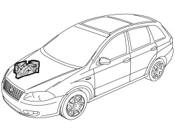
Applies to: all engines; all production periods
1. Use a hot air blower and a wire brush to remove the sealant and underbody protection.
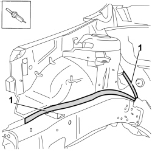
Applies to: all engines; all production periods
1. Use a hot air blower and a wire brush to remove the sealant and underbody protection.
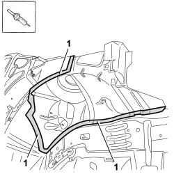
Applies to: all engines; all production periods
1. Use the chamfering machine to remove the spot welds shown in the diagram.
2. Use the drill and chamfer the spot welds not accessible with the chamfering machine.
3. Open the fastening clip.
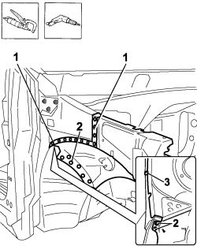
Applies to: all engines; all production periods
1. Use an alternating saw following the dotted cutting lines shown in he diagram to access the weld spots inside the turret.
2. Use an oxyacetylene torch and wire brush to unsolder the brazing shown in the diagram.
3. Use the drill and chamfer the spot welds not accessible with the chamfering machine.
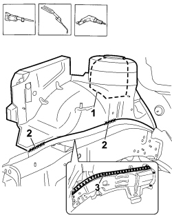
Applies to: all engines; all production periods
1. Use the drill and chamfer the spot welds inside the turret shown in the diagram.
2. Use the drill and chamfer the spot welds in the windscreen wiper compartment shown in the diagram.
- Use the hammer and chisel and remove the spot welds chamfered previously.
3. Remove the shock absorber mounting turret.
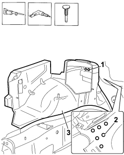
Applies to: all engines; all production periods
- Straighten the edges of the bodyshell using a hammer and dolly block.
- Remove the spot weld residues using a disc grinder.
- Use a rotary brush to clean the areas treated previously.
1. Apply electro-galvanizing paint.
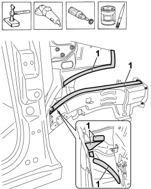
Applies to: all engines; all production periods
1. Work at the bench and make the openings shown in the diagram in the replacement turret using a drill.
- Remove the anti-corrosion treatment from the entire perimeter of the replacement reinforcement using a rotary brush on both the inside and the outside.
2. Apply electro-weldable paint to the edges treated previously.
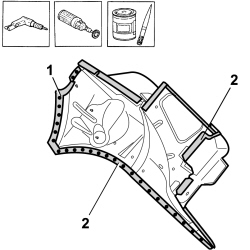
Applies to: all engines; all production periods
Refitting
Removing- Apply sealant to the areas illustrated in the diagram.
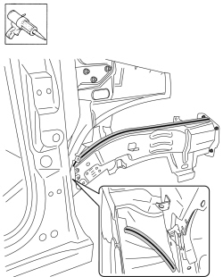
Applies to: all engines; all production periods
1. Position the front shock absorber mounting turret correctly on the vehicle and secure it using self-locking clamps and later on using parker bolts.
2. Position the side panel outer front reinforcement and the upper front strut correctly on the vehicle. Secure them using self-locking clamps and then using Parker bolts.
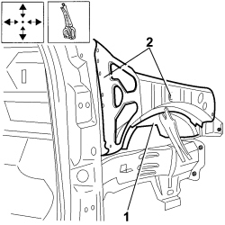
Applies to: all engines; all production periods
1. Fit the wing and the bonnet provisionally.
- Check the alignment and the surrounding gaps.
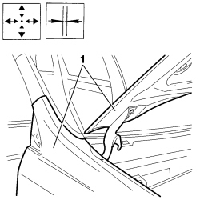
Applies to: all engines; all production periods
1. Close the fastening clip.
2. Use a spot welder in the areas shown in the diagram.
3. Use the MIG welder to fill weld at the points shown in the diagram.
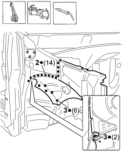
Applies to: all engines; all production periods
1. Use the oxyacetylene torch and braze the points shown in the diagram.
2. Use a spot welder in the areas shown in the diagram.
3. Use the MIG welder to fill weld at the points shown in the diagram.
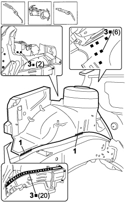
Applies to: all engines; all production periods
- Correct any distortions to the panel using a hammer and dolly block.
- Use a disc grinder to level and remove the welding.
- Use a rotary brush to clean the areas welded previously.
1. Apply anti-oxidant protection to the areas involved in the welding.
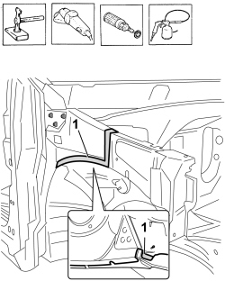
Applies to: all engines; all production periods
- Correct any distortions to the panel using a hammer and dolly block.
- Use a disc grinder to level and remove the welding.
- Use a rotary brush to clean the areas welded previously.
1. Apply anti-oxidant protection to the areas involved in the welding.
- Seal the join lines between the replacement part and the vehicle.
- Apply the underbody protection.
- Renew the sound insulation.
- Proceed with the painting stage.
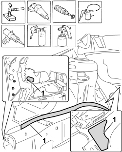
Applies to: all engines; all production periods
Op. 7210A56 R R BODY SIDE OUTER FRONT STIFFENER, (ONE) LH OR RH
Op. 7210A18 R.R FRONT CROSSMEMBER
Op. 7210A46 R R (COMPLETE) UPPER FRONT STRUT (ONE) LH OR RH